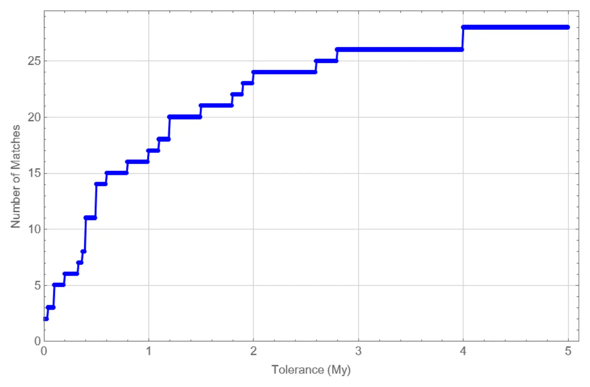

Correlation and cyclicity of stratigraphic sequence boundaries and chronostratigraphic stage boundaries over the last 253 million years
Key finding. Twenty-eight of the 47 chronostratigraphic stage boundaries of the last 253 million years — 60% — coincide with a dated stratigraphic sequence boundary, a correlation far too strong to be accidental, and independent spectral analysis of the two sets returns the same 31-million-year cycle at better than 99.9% confidence.

What question did this research address?
The Phanerozoic record is divided up two quite different ways. Chronostratigraphic stage boundaries rest mainly on biostratigraphy and radio-isotopic dating — changes in the fossil fauna, pinned in time. Stratigraphic sequence boundaries rest on changes in global sea level and tectonism — physical unconformities in the rock.
Those are, in principle, independent ways of carving up time. This paper asked whether their boundaries actually fall at the same dates, and whether either carries a periodic signal.
What did we find?
Matching the ages of 28 sequence boundaries against 28 dated stage boundaries over the same 253 million years, the probability of that many coincidences arising by chance is between 0.01 and 0.001 at the maximum mismatch tolerance of about 4 million years.
Tightening the tolerance strengthens the result rather than dissolving it. At the average mismatch of 0.7 million years there are still 18 matches, with a probability of about 1 in 100,000.
Treated as a binomial problem — 28 hits out of 47 available stage boundaries — the confidence level is very high. The authors read this as evidence that unconformities at sequence boundaries were commonly used to help define the stage boundaries in the first place.
Spectral analysis run separately on each set of dates returns a common strong peak at 31 million years, significant at better than 99.9% confidence.
That period sits inside the 26-to-36-million-year band already reported for tectonism, intra-plate volcanism, climate change, ocean anoxia, biodiversity, and mass extinctions, which implies the phenomena are causally linked rather than separately periodic.
The pacemaker is not settled. Internal Earth processes are the likely candidates, but essentially identical cycles appear in the amplitude modulation of the Earth's 2.4-million and 9-million-year orbital eccentricity cycles, which would make the timing astronomical rather than geological.
Why does it matter?
It ties the physical and biological subdivisions of deep time to one another. If sea-level lows and faunal turnover happen together, then the geologic timescale is not two independent accountings of the same interval but two views of a single set of events.
That has an uncomfortable corollary the paper states plainly: some of the correlation may be circular, because the physical unconformities were convenient markers when the stage boundaries were defined. Distinguishing a real coincidence of events from an artefact of how the timescale was built is the live question.
A 31-million-year period shared with tectonism, volcanism, anoxia, and extinction points at one underlying driver rather than many. Whether that driver is inside the Earth or in its orbit is the difference between a planet with its own long-period rhythm and one being paced from outside.
Citation
Michael R. Rampino and Ken Caldeira (2025). Correlation and cyclicity of stratigraphic sequence boundaries and chronostratigraphic stage boundaries over the last 253 million years. Earth-Science Reviews 265, 105100.
Related
- What does the deep-time record reveal about how the Earth system behaves?
- A 27.5-My underlying periodicity detected in extinction episodes of non-marine tetrapods (Rampino et al., 2021)
- Periodic impact cratering and extinction events over the last 260 million years (Rampino and Caldeira, 2015)
- Major episodes of geologic change — correlations, time structure and possible causes (Rampino and Caldeira, 1993)